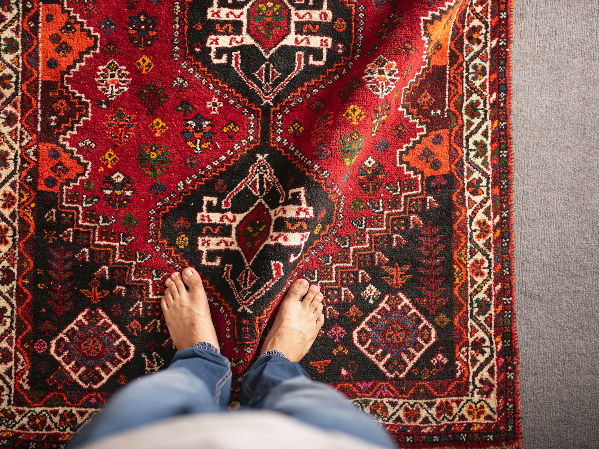

Answers · Everyday nervous system resets
The Benefits of Taking Your Shoes Off in the House
Picture this: you've had a long, exhausting day, and all you want is to come home, sink into the couch and catch your breath, and you still have your shoes on. Many of us keep them on inside without a second thought, and that small habit may be keeping you from truly relaxing, for reasons that are both practical and energetic.

A threshold between out there and home
Removing your shoes when you walk in the door is a physical cue that you've moved from the outside world into the safe space of your home. I think of it as a ritual for shifting gears; the same way dimming the lights or lighting a candle tells you the day is winding down, slipping off your shoes signals that work mode is over and rest can begin.
What your shoes bring in with them
Shoes pick up a lot on their travels. In a 2001 study in Environmental Health Perspectives, a lawn herbicide was tracked into homes after it was applied, mostly by people and pets coming in from the lawn, and settled into the carpet dust, which matters even more if you have little ones playing on the floor.
The ritual of coming home
When you make shoes-off a ritual rather than a rule, it becomes a moment for you. Take a breath as you step out of them, notice your feet on the floor, and let the day stay at the door with your shoes. It's a small change that makes your home feel more like a sanctuary.
Make it easy
- Put a bench or basket right inside the door so there's an obvious place for shoes.
- Keep a pair of cozy house slippers or socks waiting there.
- Add a washable rug or mat inside the entry to catch what does get tracked in.
- Make it the family norm, and offer guests slippers so they feel welcome rather than awkward.
Keep exploring
- What are the benefits of grounding barefoot?
- How do I regulate my nervous system day to day?
- Does a bath before bed help you sleep?
Common questions
Is it healthier to take your shoes off in the house?
It can be. Research has found lawn chemicals tracked indoors on shoes and settling into carpet dust, so leaving them at the door helps keep your floors cleaner, especially if children or pets spend time on them.
Why does taking my shoes off help me relax?
It works as a transition ritual. Taking your shoes off is a physical cue that you've left the outside world behind, and for many of us that makes it easier to shift into rest.
How do I ask guests to take their shoes off?
Keep it warm and easy: a bench and a basket of clean slippers by the door does most of the asking for you.
Sources
- Nishioka, M. G., et al. (2001). Distribution of 2,4-D in air and on surfaces inside residences after lawn applications. Environmental Health Perspectives.
This article is for education and everyday wellbeing; it isn't medical advice. If you're struggling with your sleep, mood or health, please talk with a licensed professional. Keep reading: all answers · the free community · about Tamara Rose